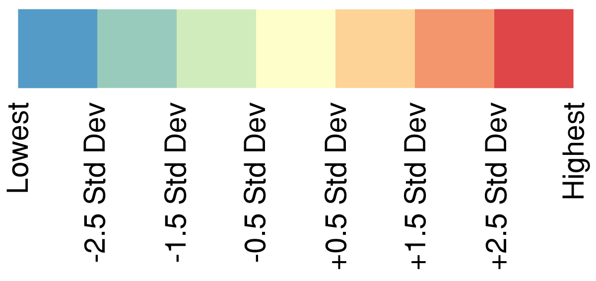

Project Home
Job Access by Wage Level
Job Access by Occupation (in progress)
Job Access by School of (in progress)
Travelsheds by Tract (in progress)
Transit Travelshed Index
Access to Jobs
Access to Living Wage Jobs
Access to Not Living Wage Jobs

Export